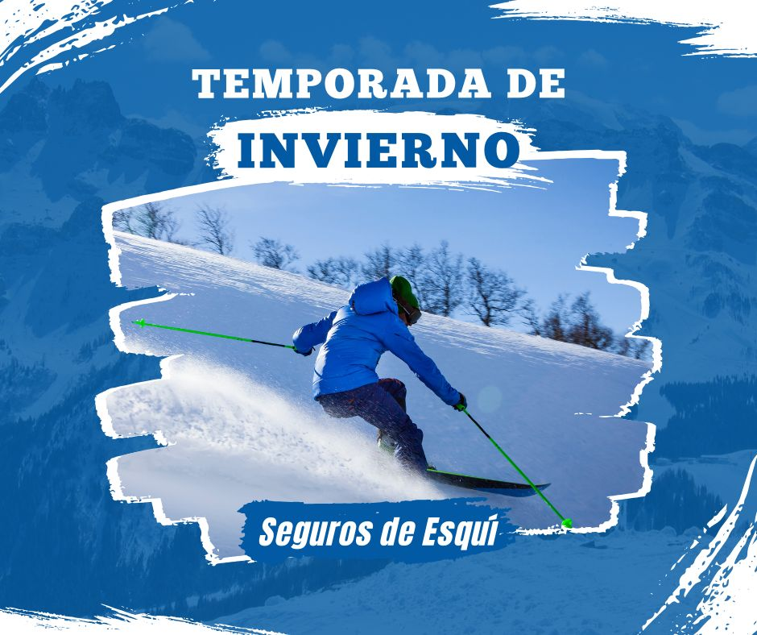

Descubre cómo los mejores seguros de esquí y snowboard te protegen frente a imprevistos. Con opciones para días puntuales o toda la temporada, te garantizan tranquilidad mientras disfrutas de tus deportes favoritos. Compara con Selectra coberturas y precios para encontrar el seguro perfecto para ti y aprovecha al máximo tu experiencia en las pistas.
Imagina que estás disfrutando de un día perfecto en la nieve: el cielo despejado y las pistas en perfectas condiciones. Pero, ¿qué sucede si algo no va según lo planeado? Desde un simple contratiempo con tu equipaje hasta un rescate en montaña, estar protegido marca toda la diferencia.
Un seguro de esquí y snowboard es tu mejor aliado para disfrutar de esta experiencia sin sobresaltos. Estas pólizas están hechas para esquiadores y snowboarders. Ofrecen coberturas esenciales que garantizan tranquilidad y seguridad. Esto es importante, ya sea por un día en las pistas o toda la temporada. Sí, las coberturas dependen del tipo de seguro y de la compañía que elijas. No te preocupes, más adelante te lo explicamos todo.
¿Te lesionaste en las pistas? Tu seguro cubre los gastos médicos, quirúrgicos y hospitalarios necesarios. Desde rescates en pista hasta traslados en trineo o ambulancia, estarás en buenas manos si necesitas atención urgente.
¿Y si te encuentras en el extranjero? También incluye la repatriación en caso de enfermedad o accidente grave.
¿Un accidente te obliga a interrumpir tus planes? Recibirás un reembolso por el forfait no utilizado.
Las clases que no puedas aprovechar también estarán cubiertas, asegurando que recuperes lo perdido.
Si necesitas regresar por la hospitalización o fallecimiento de un familiar, tu seguro cubrirá todos los gastos.
En caso de fallecimiento del asegurado, la póliza incluye la repatriación de los restos mortales al lugar de inhumación.
Cubre los daños a terceros, ya sean personales o materiales, que puedan ocurrir mientras disfrutas de las pistas.
¿Planeas una escapada a la nieve por el fin de semana o solo esquiarás unos días? Entonces este tipo de seguro es ideal para quienes esquían ocasionalmente y desean pagar solo por el tiempo que realmente pasarán en las pistas.
Es perfecto para ti si viajas solo o con amigos y quieres sentirte protegido sin comprometerte por más tiempo del necesario. Desde accidentes en las pistas hasta imprevistos con el equipo, este seguro está diseñado para que disfrutes al máximo de tu tiempo en la nieve.
¿Vas con toda la familia? Proteger a los tuyos nunca fue tan sencillo. Este seguro cubre tanto a grandes como a pequeños, para que el único objetivo sea disfrutar juntos mientras esquían o hacen snowboard.
Agentes especializados en asesoramiento en el mercado de seguros.
Calcular presupuesto Te llamamosSi eres un amante del esquí que pasa buena parte del invierno en las pistas, un seguro por temporada es exactamente lo que necesitas. Diseñado para esquiadores frecuentes, este tipo de póliza asegura protección continua durante toda la temporada invernal.
Ideal para quienes esquían regularmente. Ofrece asistencia médica ilimitada, cobertura por rescates y reembolsos de forfaits no usados durante toda la temporada. Pensado para quienes viven la nieve intensamente.
Perfecto para proteger a toda la familia durante un invierno completo en la nieve. Cubre asistencia médica para todos, rescates en montaña y protección del equipo. Una opción ideal para familias que aman compartir días en las pistas.
Ideal para: Esquiadores que buscan una cobertura completa y flexible.
Ver preciosIdeal para: Viajes internacionales y cobertura legal.
Ver preciosIdeal para: Cobertura global con énfasis en rescates y equipo.
Ver preciosIdeal para: Familias y esquiadores frecuentes.
Ver preciosCuando piensas en tranquilidad en las pistas, Mapfre es un nombre que siempre destaca. Ya sea que esquíes un par de días al año o cada fin de semana, sus seguros son tan flexibles como tus planes. Incluyen asistencia médica en pistas, repatriación y reembolso de forfait, para que te concentres solo en disfrutar de la nieve sin preocupaciones.
Con ARAG, estás protegido dentro y fuera de las pistas. Son expertos en ofrecer asistencia legal y coberturas internacionales, perfectas para quienes esquían en destinos más lejanos. Además, si algo interrumpe tu experiencia, reintegran forfaits y clases de esquí no utilizadas. Su misión es que solo te preocupes por vivir el momento.
AXA entiende que la aventura en la nieve no termina en las pistas. Sus seguros combinan asistencia médica en cualquier parte del mundo con protección para tus esquís, forfaits y equipo personal. ¿Tu prioridad es sentirte respaldado mientras disfrutas? AXA lo tiene cubierto, desde rescates en montaña hasta la reparación de tus esquís.
Si esquiar en familia es lo tuyo, FIATC es tu mejor aliado. Sus productos están diseñados para proteger a todos los miembros, desde los más pequeños hasta los más experimentados. Con opciones ampliables, asistencia médica y cobertura de equipo, FIATC se asegura de que cada momento en la nieve sea inolvidable y sin sobresaltos.
Agentes especializados en asesoramiento en el mercado de seguros.
Calcular presupuesto Te llamamosSi estás planeando una escapada a la nieve, es normal que te surjan dudas sobre los seguros de esquí: qué cubren, si son necesarios y cómo elegir el más adecuado. Aquí te resolvemos las preguntas más comunes con ejemplos reales para que disfrutes de la nieve con total tranquilidad.
Imagina que estás esquiando en Baqueira Beret y sufres una caída que requiere atención médica urgente. Sin un seguro, podrías enfrentarte a gastos médicos inesperados, como el rescate en pista o el traslado al hospital. Además, un seguro también te protege si pierdes tus esquís alquilados o si debes cancelar tu viaje por una enfermedad de última hora. Aunque no siempre es obligatorio, tener un seguro te garantiza disfrutar de tu experiencia sin preocupaciones.
Los seguros de esquí se adaptan a las necesidades de cada viajero. Por ejemplo:
Además, puedes optar por una modalidad familiar para proteger a todos los miembros de tu familia o un seguro individual si viajas solo o con amigos.
¡Por supuesto! Imagina que decides de último minuto pasar un fin de semana esquiando en Cerler. Con un par de clics, puedes contratar tu seguro online el día anterior y estar protegido. Muchas aseguradoras ofrecen opciones rápidas y flexibles, ideales para quienes improvisan escapadas a la nieve.
Depende de la aseguradora y el tipo de seguro. Por ejemplo, algunas pólizas cubren solo las zonas habilitadas dentro de las estaciones, como las pistas marcadas en La Molina. Sin embargo, otras, como las ofrecidas por InterMundial, pueden incluir rescates en zonas fuera de pista y en alturas de hasta 5.000 metros. Si planeas aventurarte más allá de las pistas marcadas, revisa siempre las condiciones de tu póliza.
Agentes especializados en asesoramiento en el mercado de seguros.
Calcular presupuesto Te llamamos